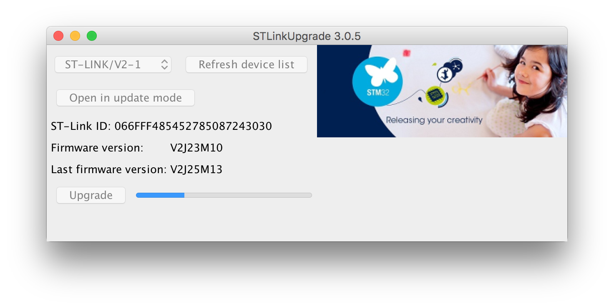

身為一個 平庸的 工程師，手邊有很多很多玩具是非常正常的事情，就讓我們來玩玩已經
夯很久的 mbed 吧:)
我使用的板子是 STMicroelectronics 的 NUCLEO-F103RB ，只要你的板子都是同樣的 NUCLEO 系列，接下來我發的文章照著作應該都沒問題才是。
將你的 NUCLEO 接上電腦
第一步當然就是把他接上電腦了啊，在這邊我使用 Macbook Pro 作為示範，不過身為一個 Linux 開發者，我所有的文章都會盡可能的確認在 Linux 上的狀況，請放心使用。
點擊掛載上的 NUCLEO 分區
這邊我有點記不清楚一開始買 NUCLEO 的狀況，理想上假設你有更新韌體 (firmware) 的話， 就會出現一個名為 NUCLEO 的分割區被你的系統自動掛載起來，點擊進到裡面。
(如果沒有的話，請參考後面的更新 firmware 資訊)
點擊 MBED.HTM 檔案
MBED.HTM 其實只是個網頁連結，會幫你導向 MBED 官方網站關於這塊開發版的資訊的位址

進入到 mbed 網站
以我這塊 NUCLEO-F103RB 的範例，我會進入到 這邊
更新韌體 (firmware)
在網站下面有韌體更新的訊息，一般我一段時間就會回來檢查一下
當然不會有人告訴你這邊的韌體程式是給 Windows 用的，Mac OSX 和 Linux 的人就直接跳 過這一頁
我們連線到 這裡 去下載我們的韌體更新程式
解壓縮 stsw-link007.zip 會看到資料夾有這些內容，我們進入到 AllPlatforms 資料夾去
coldnew@osx ~/stsw-link007 $ tree -L 3 . <b> ├── AllPlatforms <b> │ ├── STLinkUpgrade.jar <r> │ ├── StlinkRulesFilesForLinux <b> │ │ ├── 49-stlinkv2-1.rules │ │ ├── 49-stlinkv2.rules │ │ └── Readme.txt <g> │ └── native <b> │ ├── linux_x64 <b> │ ├── linux_x86 <b> │ ├── mac_x64 <b> │ ├── win_x64 <b> │ └── win_x86 <b> ├── Windows <b> │ ├── ST-LinkUpgrade.exe │ └── STLinkUSBDriver.dll └── readme.txt <g> 9 directories, 7 files
你會看到有一個 STLinkUpgrade.jar 檔案，這就是我們等等要使用的更新程式，但是先 讓我們把一些其他的東西設定好：
如果是 Linux 的用戶，你必須安裝 libusb-1.0 這個套件，以 Debian/Ubuntu 為例:
coldnew@debian ~ $ sudo apt-get install libusb-1.0
Gentoo Linux 則是
coldnew@gentoo ~ $ sudo emerge dev-libs/libusb
接下來我們必須將 udev rule 複製到系統的 /etc/udev/rules.d/
coldnew@gentoo ~/AllPlatforms $ sudo cp -rf StlinkRulesFilesForLinux/*.rules /etc/udev/rules.d/
然後重新啟動 udevadm 就好，這樣我們就可以執行更新程式了
coldnew@gentoo ~/AllPlatforms $ sudo udevadm control --reload-rules
因為更新程式 STLinkUpgrade.jar 是 .jar 檔案，你的電腦需要安裝 JAVA 才能執行。
我們用以下命令執行 jar 程式
coldnew@gentoo ~/AllPlatforms $ java -jar STLinkUpgrade.jar
然後你就會看到更新視窗
我們快快樂樂的更新我們的韌體

進入線上 IDE
更新完後，我們連線到線上 IDE 來測試看看 mbed，不知道位址的話，他在 這裡
將你的開發板加入到 IDE
如果你的 IDE 尚未加入任何平台，你在建立新的專案會看到如下的警告，因此我們必須先 把我們的開發板資訊加入到 IDE 才行
選擇你的開發板，這裡我選擇 NUCLEO-F103RB 作為範例
結果我們被導回到開發板的資訊頁，點選 Add to your mbed Compiller
添加成功
回到 IDE 後會看到右上腳會顯示你預設的開發平台資訊
建立專案
進到 IDE 後，當然一切都是空空如也，所以我們建立新的專案
點選 NEW 建立新專案後先選擇一個範例，如何寫程式後續文章再來講
專案正在建立了
專案建立完成，點選 main.cpp 進入到我們的程式
編譯我們的程式
進到程式碼後看一眼覺得跟 Arduino 的程式碼很像
點選 Compile 進行編譯

正在編譯中….
完成後會讓你下載編譯完成的檔案，我在這邊存到桌面
燒錄程式
怎樣燒錄程式呢…答案就是把你剛剛下載的 Nucleo_blink_led_NUCLEO_F103RB.bin 這 個檔案拖曳到 NUCLEO 檔案系統，就好了。
對，你沒看錯，拖曳進去就會開始燒錄了
查看我們的結果
如果你一切順利的話，你會看到板子上的 LED 不斷的閃爍，就像這樣，代表燒錄完成囉 ~
小技巧
每次更新新的程式都要拖曳到 NUCLEO 的檔案系統其實還蠻麻煩的，所以我在開發時會習
慣將 下載位址 設定為 NUCLEO 檔案系統的位置，這樣更新新的程式只要下載就會自動
燒錄過去了